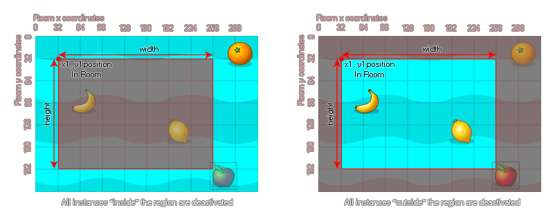

instance_deactivate_region
Deactivates all instances inside (or outside) the given region.
Syntax :
instance_deactivate_region(left, top, width, height, inside, notme);
| Argument | Description |
|---|---|
| left | The x coordinate of the left of the rectangular region to deactivate. |
| top | The y coordinate of the top of the rectangular region to deactivate. |
| width | The width of the region to deactivate. |
| height | The height of the region to deactivate. |
| inside | Whether to deactivate instances on the inside of the region (true) or the outside (false). |
| notme | Whether to exclude the calling instance from deactivation (true) or not (false). |
Returns: N/A
Description
With this function you can define a region within the room to deactivate instances that have previously been activated. This region can either be flagged as "inside" or "outside" as demonstrated in the following image: 
You can see in the image above that the "apple" instance is always inactive because, even if the sprite itself doesn't overlap the region, the bounding box does. So, instances are considered to be within the
region specified when their bounding box overlaps with it, and the state of the collision mask (precise or not) is not taken into consideration.
Example :
instance_activate_all();
instance_deactivate_region(view_xview[0] - 64, view_yview - 64, view_wview[0] + 128, view_hview + 128, false, false);
The above code activates all instances and then deactiavtes a region within the room.